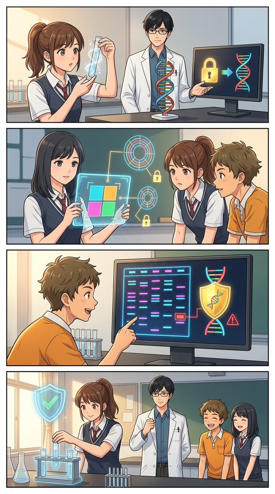
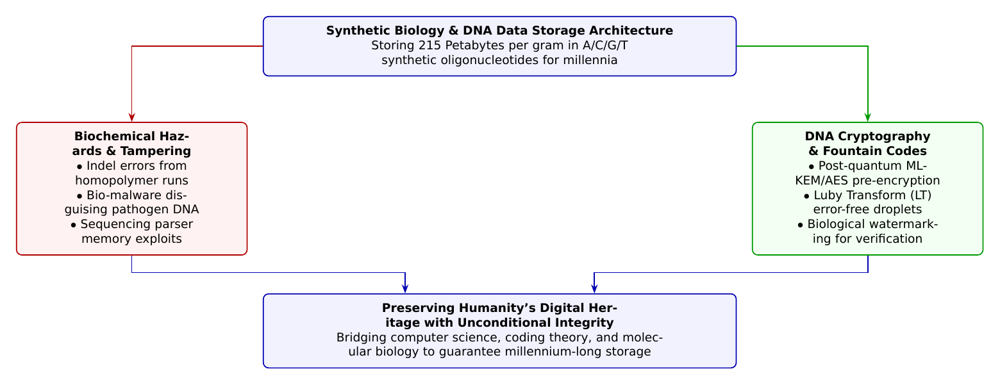

🎨 4コマ漫画挿絵（文字なし）
AI高解像度生成
▲ 【挿絵】青葉台高校 情報科学部＆帝都科学大学サイバーディフェンス・ラボでの実践シーン
💬 4コマ漫画キャラクターセリフ (Story Dialogue Script)
日・英バイリンガル (JA / EN)[蓮]「これぞ究極の高密度記録媒体、合成DNAデータストレージ！ 1グラムのDNAに2億ギガバイト以上を保存できるんだ」
[Ren] "That is the ultimate ultra-dense storage: synthetic DNA! 1 gram of DNA can store over 200 million gigabytes!"
[葵]「データの0と1が、ウイルスの毒素コードに勝手に書き換えられちゃったら大惨事じゃない！」
[Aoi] "If our binary 0s and 1s get surreptitiously flipped into lethal toxin gene sequences, that's catastrophic!"
[蓮]「ホモポリマー（同一塩基の連続）を数学的に排除しつつ、生物学的透かしで不正改ざんを即時検知できるんだね！」
[Ren] "Eliminating homopolymer runs algorithmically while embedding biological watermarks detects any rogue synthesis tampering!"
[全員]「生命の神秘とサイバー防衛が共鳴し、悠久の未来へ信頼の記憶を継承しよう！」
[All] "Harmonizing the mystery of life with cyber defense, we pass trusted memories across millennia!"
📖 小説本文
冬の暖かな日差しが差し込む青葉台高校の生物実験室。理科机の上には、DNAの二重螺旋模型と、遠心分離機、そして橘葵の手の中に掲げられた無色透明なマイクロチューブが静かに佇んでいた。
「……ねえ悠真先輩、これ、ただの水滴にしか見えないよ？」
葵が試験管を光に透かしながら目を丸くした。 「このチューブの底にあるほんの数マイクロリットルの透明な液体の中に、映画数十万本分、全世界のインターネットの全バックアップデータが保存できるって……本当なの！？」
「本当だよ、葵ちゃん」城崎悠真が白衣のポケットからタブレットを取り出しながら微笑んだ。 「現代のハードディスクやSSD、磁気テープは、どんなに大切に保管しても数十年で磁気や酸化によって劣化してしまう。でも、何万年も前のマンモスの化石から完全なDNA配列が読み取れるように、**『DNA（デオキシリボ核酸）』は数千年〜数万年にわたって情報を永久保存できる地球上最強の記録メディア**なんだ。1グラムのDNAには、なんと約215ペタバイト（約2億1500万ギガバイト）のデータが詰め込める」
神崎蓮がホワイトボードにアデニン（A）、シトシン（C）、グアニン（G）、チミン（T）の4つの文字を書いた。 「コンピュータの『0』と『1』の2進数（Binary）を、DNAの4つの塩基――Aを `00`、Cを `01`、Gを `10`、Tを `11` という4進数（Quaternary）に変換して化学合成するんだ。これをDNAデータストレージと呼ぶんだよ」
「でもね」白石結衣が真剣な表情で眼鏡のブリッジを押し上げた。 「生命の究極のコードであるDNAにデジタルのデータを書き込むとき、そこには従来のハードディスクには存在しなかった**『合成生物学（Synthetic Biology）特有のサイバー・バイオセキュリティの断崖』**が口を開けているのです」
---
📊 セキュリティ構造図解 (TikZ LuaLaTeX生成)
国家安全基準・工学図解
▲ 【技術構造図】IPAデジタルスキル標準・国際規格に準拠した仕組みのモデル化